¿Por qué Codéalo? y ¿Por qué El Humacao que yo amo?
Codéalo es el dominio que servirá para alojar
todos los proyectos que haga como desarrolladora WEB. Por supuesto
que codéalo tiene su propia historia, y te la cuento en mi
portafolio oficial. Si quieres conocer un poco más visitanos en
Codéalo.
Esta página WEB es mi primer trabajo como desarrolladora. Un
humilde homenaje a mi pueblo, a su historia y a mi circunstancia.
Estaba en quinto grado del nivel elemental, cuando La Asociación
de Humacaeños Ausentes lanzó una convocatoria para que los
estudiantes hicieramos composiciones sobre nuestro pueblo y que
evocara sentimientos de amor para todos aquellos humacaeños que
por diversas razones ya no vivían aquí. Convercé con mis abuelos y
tías para que me contaran cosas importantes del pueblo. Redacté mi
ensayo, mi Titi Lole le dió una miradita e indicó que cumplía con
lo solicitado.
Lo titulé
El Humacao que yo amo la realidad es que a penas
recuerdo su contenido, pero obtuve el tercer lugar en la
competencia en la categoría de escuela elemental. Me obsequiaron
una versión para niños de Don Quijote de la Mancha, es muy
probable que desde allí haya comenzado mi amor por la literatura.
Las fotos de la galería y su información
Todas las fotos contenidas en esta página WEB fueron tomadas por su desarrolladora Lourdes Díaz Ortiz. Para ello se utilizó un teléfono celular marca OnePlus 7 Pro modelo GM1915. Las fotos se hicieron entre el 21 de septiembre al 21 de octubre de 2022. Agradecemos al Departamento de Arte, Cultura y Turismo de Humacao bajo la dirección de su alcalde por la información suministrada. La misma consistió de un opúsculo de dónde se tomaron los datos que acompañan cada fotografía. Por último pero no por ello menos importante un enorme gracias a José Carlo Rodríguez adscrito al área de Bellas Artes, no solo fue mi guía turístico y me facilitó mucha de la información, también es uno de los amores de mi vida. Gracias por ese tiempo de calidad en familia, buen recorrido, ya no tengo bebé.
-
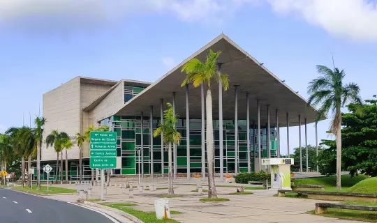
Centro de Bellas Artes Águedo Mojica Marrero
Galardonado diseño arquitectónico. Sus cristales multicolores evocan el Árbol del Almendro, símbolo emblemático citadino. Su escenario está diseñado al estilo Broadway. Para más información:
(787)656-9530 -
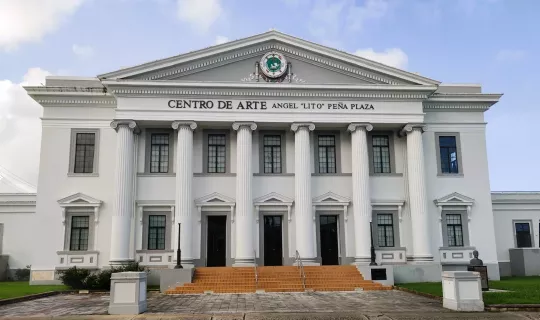
Centro de Arte Ángel Lito Peña
Este edificio fue la Antigua Corte de Distrito del área Este. Su estilo es neoclásico del año 1925. Su arquitecto fue Rafael Carmoega, quién también diseñó El Capitolio de San Juan. Para más información:
(787)285-3550 -
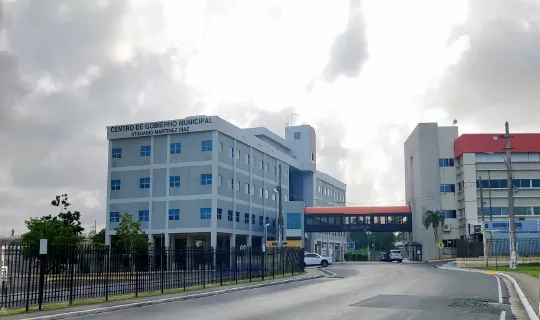
Casa Alcaldía Atanacio Martínez Díaz
Centro de Gobierno Municipal. Fundado en el año 2001. En su vestíbulo se exhibe la Galería de los Pasados Incumbentes de Humacao. Para más información:
(787)852-3066 -
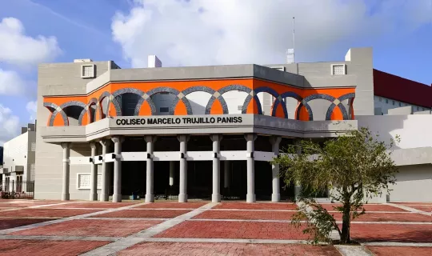
Coliseo Marcelo Trujillo Panisse
En honor al alcalde Marcelo Trujillo Panisse. El diseño del coliseo semeja a los anillos olímpicos. Tiene un cupo de 8,000 asistentes. Para más información:
(787)656-9530 -
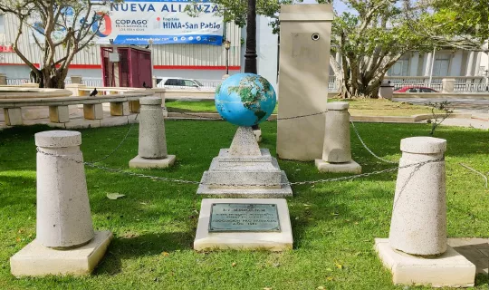
Monumento a los soldados caidos
En honor a nuestros héroes de guerra. Este monumento está ubicado en la Plaza del Recreo.
-
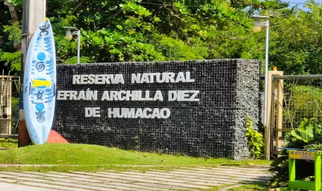
Reserva Natural Efraín Archilla
Pertenece al Departamento de Recursos Naturales y Ambientales. Lugar hermoso para el disfrute familiar. Para citas y mayor información:
(787)852-6058
(787)397-1900 -
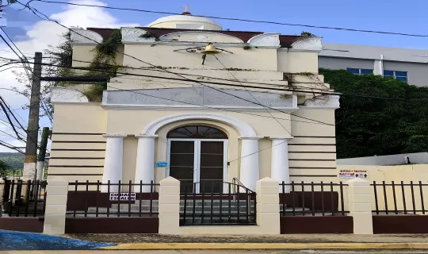
Ermita Gúzman
Al Ermita Guzmán se le conoce como la capilla del Perpetuo Socorro. Construída en el año 1864 por orden del acaudalado hacendado Don Antonio Guzmán Ramírez.
-
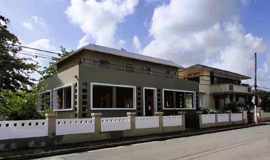
Museo Casa Roig
Actualmente pertenece a la Universidad de Puerto Rico Recinto de Humacao. Diseñado el 1919 por el arquitecto Antonin Nechodoma. Para más información:
(787)852-8380 -
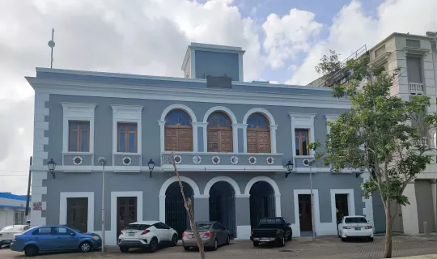
La Casa del Rey
Primera Casa Consistorial (Alcaldía) fundada en el año 1812. En este edificio se divulgó la lectura de la Proclama de la Abolición de la Esclavitud en Humacao. Actualmente el edificio es considerado Momumento Histórico.
-
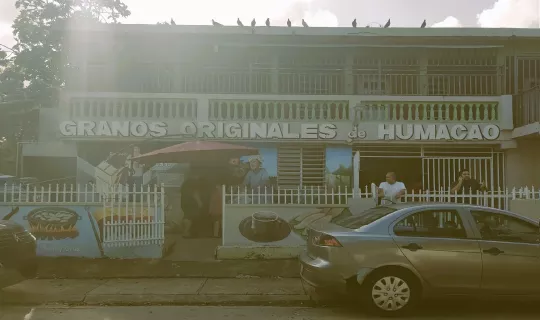
Casa de los Granos
Emblemático lugar dónde se confeccionan y venden las frituras de arroz conocidas como granos. A partir de las doce de la medianoche salen los pregoneros con los carritos a vender esta delicia por las calles de Humacao. Para más información:
(787) -
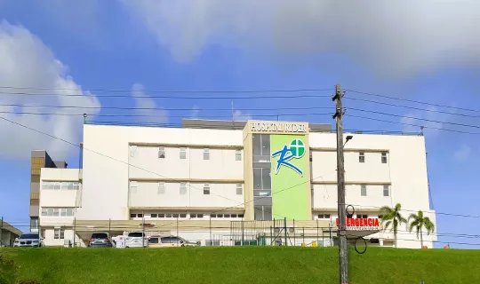
Hospital Ryder
El Hospital Ryder fue fundado en el 1914, para responder a las necesidades de salud de los residentes de esta región geográfica de Puerto Rico. Su historia comienza en 1910, con el Rev. Charles Ryder, secretario corresponsal de la Asociación Misionera Americana quién solicitó ayuda para establecer un ministerio de salud y un hospital, frente al desolador panorama de salud que encontró en el área.El 21 de diciembre de 1915 se coloca la primera piedra del antiguo edificio que alojaba al Hospital. En 1918 se inaugura el nuevo edificio el cual originalmente se conocía como Hospital Congregacional y luego se le cambio el nombre a Hospital Ryder en honor al Reverendo Charles Ryder.
-
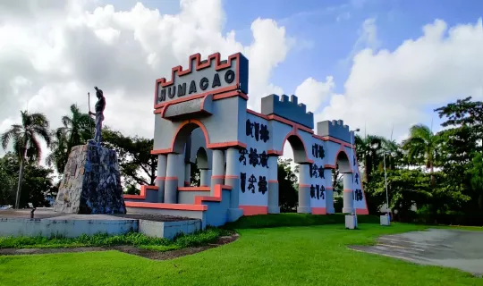
Plaza del Bicentenario
Estructura con reminiscencia español y taína. En ella se erige el Momumento al Cacique Jumacao, jefe principal taíno, quién se destacó por su coraje y valentía al reconocerle haber sido el último cacique en entregar su bastión a manos de los españoles.
-
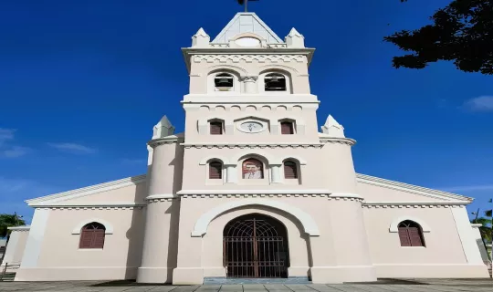
Concatedral Dulce Nombre de Jesús
Monumento histórico de estilo gótico. Data del 1767 su construcción fue ordenada por el Obispo Francisco de la Cuerda y Gracia. Es la única concatedral en Puerto Rico por ser diócesis de dos catedrales y dos patrones. Para más información:
(787)852-0868 -
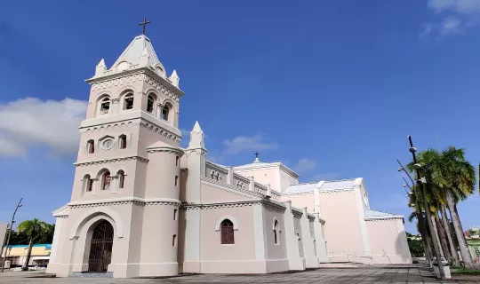
Vista lateral de la Concatedral
La concatedral Dulcen Nombre de Jesús está ubicada en la Plaza del Recreo.
-
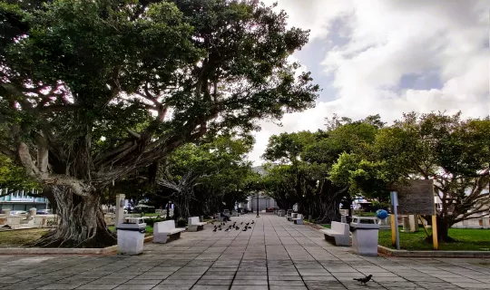
Plaza del Recreo casco urbano de Humacao
Construida en el año 1863. Es un lugar de esparcimiento para la ciudadanía humacaeña y sus visitantes. Considerada como una de las plazas más hermosas de Puerto Rico.
-
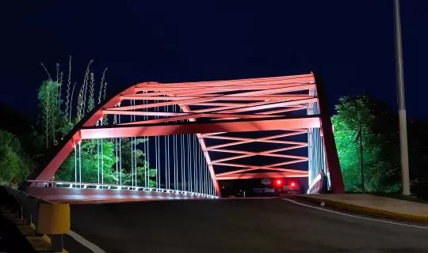
El Puente de Patagonia
Este puente conocido cómo El Puente de Patagonia fue inaugurado el 6 de junio de 1996. El 15 de octubre de 2020 se llevaron a cabo los actos simbólicos de la reinauguración de la emblemática construcción, ahora con una vistosa iluminación que también conllevó mejoras al sistema eléctrico convirtiéndose en un remozado puente de acero, punto turístico y de interés para muchos dentro y fuera de Humacao.
-
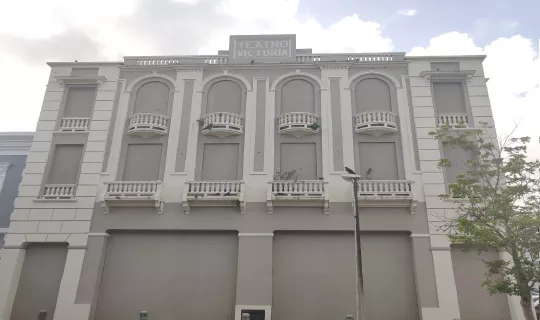
Teatro Victoria
Construído en 1912 como el Hotel Leduc. En 1928 se convirtió en el Teatro Victoria.
-
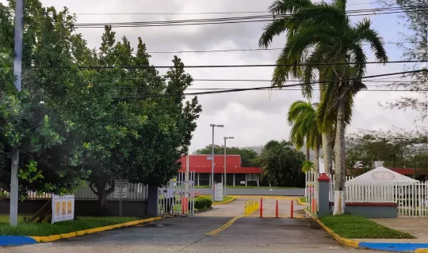
UPR Humacao
Se fundó en el año 196X como el Colegio Regional de Humacao adscrito a la Universidad de Puerto Rico. En el año 19XX se convierte en recinto universitario cambiando de nombre a Colegio Universitario de Humacao. Para más información:
(787)850-0000
Breve historia de Humacao
Según, el documento titulado Breve Historia de la Ciudad de
Humacao, distribuido por Departamento de Arte, Cultura y Turismo
de Humacao, nuestro pueblo fue fundado en abril de 1722. Entre sus
múltiples cognomentos se encuentran: “La Ciudad Gris” (por el humo
producto de la actividad de las centrales azucareras que hubo en
el área), “Los roe huesos” y actualmente “Ciudad que brilla”.
Nuestra Señora de la Inmaculada Concepción es su santa patrona y
cuenta con la única concatedral de Puerto Rico, La Concatedral
Dulce Nombre de Jesús.
Para 1722 llegó a sus playas un grupo de emigrantes de las Islas
Canarias que junto a los Taínos jíbaros, fundaron un pequeño
poblado que bautizaron San Luis de Príncipe de la Rivera de
Jumacao, en honor al príncipe Luis y al Cacique Jumacao o Macao,
señor de estas tierras antes de la colonización. Con el pasar del
tiempo solo se le llamó a la ciudad, Humacao.
Para información más detallada del pueblo, su historia, su cultura
y arquitectura consulte fuentes como:
Sobre mí
¡Saludos! Soy Lourdes Enid Díaz Ortiz, nacida y criada en La ciudad
gris, Humacao, Puerto Rico.
Trabajé como maestra de Matemáticas, y luego de un par de años
realicé estudios en Computación Educativa. En términos profesionales
esa preparación me sirvió para ocupar puestos muy importantes,
siendo el útimo de ellos el de directora de la Unidad de Tecnología
y Currículo del Departamento de Eduacación. Un orgullo y un gran
privilegio servirle a mi País.
Actualmente estoy jubilada e invierto mi tiempo en ofrecer algunos
cursos en la universidad y en seguir aprendiendo.
Contáctame
En caso de necesitar contactarme favor de cumplimentar el formulario